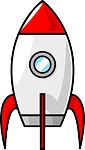

Kohetearen Mugimendu Ariketa (Ebazpena)
Hasierako lekura bueltatu
Kontrolak:
Gezi-teklak (Mugimendu zuzenak) |
Q tekla:
Diagonal gora-ezkerrera |
E tekla:
Diagonal behera-eskuinera
Animatu: Sakatu gezia eta mugitu egingo da!
